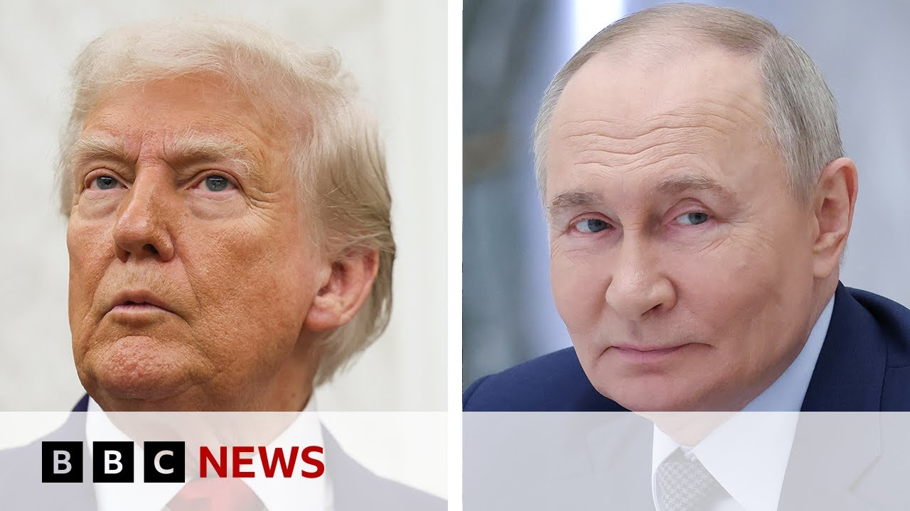

【特朗普给普京设定乌克兰停火最后期限 | BBC新闻】
Summary: President Trump has set a two-week deadline for Putin to agree to a ceasefire in Ukraine, warning of a changed stance if Russia delays. Russia's foreign minister discussed proposals for talks in Istanbul, while Germany and Ukraine pledged military cooperation. However, Russia continues attacks and demands, with no signs of stopping. Ukraine's president criticizes allies' inaction, as attacks persist. The Kremlin denies plans for Putin-Trump talks but urges continued Russia-Ukraine negotiations.
摘要： 特朗普总统给普京设定了两周期限，要求其同意乌克兰停火，并警告若俄方拖延将改变立场。俄外长讨论了伊斯坦布尔会谈的提议，德国与乌克兰承诺加强军事合作。然而，俄方持续攻击并提出新要求，无停火迹象。乌克兰总统批评盟友不作为，袭击仍在继续。克里姆林宫否认普京与特朗普会谈计划，但呼吁继续俄乌谈判。

⏱️ Estimated Reading Time: 5 min
President Trump has indicated he'll impose a deadline for Vladimir Putin to agree to a ceasefire in Ukraine.
特朗普总统表示，他将给普京设定最后期限，要求其同意乌克兰停火。
Mr. Trump said that if the Russian leader was still stringing him along in two weeks, he would respond differently.
特朗普称，若俄领导人在两周内仍拖延，他将采取不同应对方式。
Mr. Trump has so far stopped short of imposing sanctions, but has warned that his stance could change.
特朗普迄今未实施制裁，但警告立场可能改变。
Well, Russia's foreign minister, Sergey Lavrov, said he'd spoken to his American counterpart, the US Secretary of State, Marco Rubio, about concrete proposals to be presented at a new round of direct talks with Ukraine next week in Istanbul.
俄外长拉夫罗夫称，他已与美国务卿卢比奥讨论具体提案，拟于下周在伊斯坦布尔与乌克兰举行新一轮直接会谈。
On Wednesday, Germany and Ukraine said that they would work together to build long range missiles.
周三，德国与乌克兰宣布将合作制造远程导弹。
Appearing alongside Vladimir Zalinsky in Berlin, the new German Chancellor Friedrich Mertz promised what he called a new form of military industrial cooperation.
德国新总理默茨在柏林与泽连斯基同台时，承诺推进新型军工合作。
So, will a deadline make an impact in bringing an end to the conflict?
那么，最后期限能否推动冲突结束？
I put that question to Vitali Shvchenko, BBC Monitoring's Russia editor and host of Ukraine Cast.
我向BBC监测俄罗斯编辑兼《乌克兰播客》主持人维塔利·什夫琴科提出这一问题。
If it's a deadline, it's not particularly hard deadline because they've said it before.
即便设定期限，也非硬性期限，因类似表态早有先例。
Um Donald Trump's own Secretary of State, Marco Rubio, uh on the 4th of April, I think he said we'll find out soon enough in a matter of weeks whether Russia is serious about uh peace and looks like they still don't know uh almost eight weeks later.
特朗普的国务卿卢比奥4月4日称“数周内便知俄方是否真心求和”，但近八周后仍无答案。
And there's nothing in Russia's actions or rhetoric that would suggest that they are even considering stopping uh attacks on Ukraine.
俄方行动或言论均未显示其考虑停止对乌攻击。
In fact, yesterday the Russian uh foreign minister Serge Lavrov, he he voiced another demand for Ukraine to meet.
实际上，俄外长拉夫罗夫昨日又对乌提出新要求。
He said Russia wants Ukraine to amend its legislation.
他称俄罗斯要求乌克兰修改法律。
So this list of demands, it's it's it's growing.
俄方要求清单正不断加长。
Russia still saying that it intends to capture more territory in Ukraine, at least the four regions that it partly controls.
俄方仍宣称意图占领乌更多领土，至少是已部分控制的四州。
Uh it still wants to discuss what it calls the root causes of the crisis.
俄方还希望讨论其所谓“危机根源”。
So nothing's changed there.
因此局势毫无变化。
And also let's not forget my team that um on the 12th of May, Russia was supposed to cease fire according to demands voiced by uh Ukraine's allies from the coalition of the willing.
需注意的是，5月12日俄方本应按乌盟友“志愿联盟”要求停火。
So all these deadlines, they came and went and nothing happened.
但这些期限逐一失效，毫无结果。
So hardly an incentive for Vladimir Putin to ceasefire.
因此普京几无停火动机。
So how much more likely is it that Vladimir Zalinski will decide to lean more on his European allies than the United States?
泽连斯基转而倚重欧洲盟友而非美国的可能性有多大？
Well, lean is what he can try to do.
他只能尝试依靠。
He's been gently and politely calling on the United States to exert more pressure on Russia and following last weekend's uh devastating aerial attacks on Ukraine, record-breaking attacks, he said it's the silence of America and other countries that enables those attacks.
他此前温和呼吁美国加大对俄施压，而上周末乌遭创纪录空袭后，他称美等国沉默纵容了袭击。
And that that statement triggered an outburst from uh Donald Trump who said, "I don't like anything that's coming out of Biminski's mouth."
此言引发特朗普激烈回应：“泽连斯基嘴里没一句我爱听的。”
That's a that's a quote.
此为原话引用。
So uh the Ukrainian president has been trying to get uh Ukraine's allies to to take some action, but um so far nothing they've taken has been able to stop the Russians.
乌总统一直试图推动盟友行动，但迄今无任何措施能阻止俄方。
In fact, this morning I've been looking at reports of of more people killed in Ukraine in in aerial attacks.
事实上，今晨有报道称乌空袭再致多人死亡。
One 68-year-old man in Sumi and five glide bombs dropped in a village in Zapariz region.
苏梅州一名68岁男子遇难，扎波罗热州一村庄遭五枚滑翔炸弹袭击。
So those attacks they just continue.
袭击仍在持续。
BBC monitoring Russia editor Vital Chevchenko speaking to us earlier.
BBC监测俄罗斯编辑维塔利·什夫琴科早前接受采访。
Well, in the last few minutes, a few lines have dropped uh from the Kremlin's morning uh press briefing, and Dmitri Prescott has been speaking again about this matter.
最新消息：克里姆林宫晨间简报称，佩斯科夫再次表态。
He says, "There are currently no plans for Vladimir Putin to speak to Donald Trump."
他表示“普京暂无与特朗普对话计划”。
He said, "We propose talks with Ukraine in Istanbul on the 2nd of June, and so far there's been no answer from Kiev."
他称“俄方提议6月2日在伊斯坦布尔与乌会谈，基辅迄今未答复”。
And he went on to say, "The main thing right now is to continue the direct Russia Ukraine talks."
他补充说“当前重点是继续俄乌直接谈判”。
Of course, some of those happened in Istanbul and very little emerged from them, but there was that prisoner exchange, of
此前伊斯坦布尔会谈成果寥寥，仅达成一次换俘。